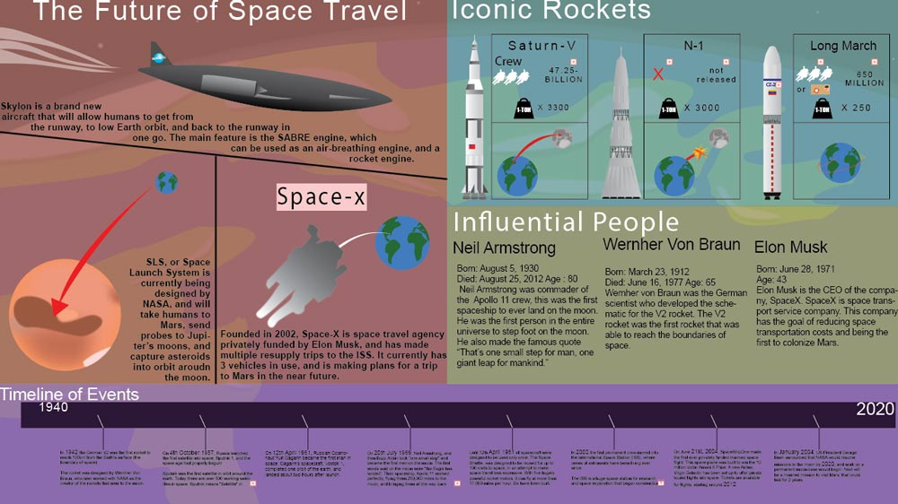

Web
Dante's Inferno PBL
 For this project, we were assigned to create a website for our client, who just so happened to be our English 10 teacher. As outlined by him, we modeled the site to teach next year's students about Dante Alighieri's Divine Comedy, specifically Inferno. Project goals included creating a website that was friendly to users of all age, and was aceessible to anyone with disabilities. We also wanted to create a website that could deliver a lot of content in the neatest way possible. In the end, we completed most of our goals, but wish we would have taken more time in the end to clean up a few details.
For this project, we were assigned to create a website for our client, who just so happened to be our English 10 teacher. As outlined by him, we modeled the site to teach next year's students about Dante Alighieri's Divine Comedy, specifically Inferno. Project goals included creating a website that was friendly to users of all age, and was aceessible to anyone with disabilities. We also wanted to create a website that could deliver a lot of content in the neatest way possible. In the end, we completed most of our goals, but wish we would have taken more time in the end to clean up a few details.
Sophomore Year Portfolio
The main goal for sophomore year was to learn the basics of html and css, and what better wasy to do that than to create a portfolio that documents the entire process, and lets us get a little creative. We were required to create a multiple page website that had a readable html markup with a linked style sheet that made the page somewhat aesthetically pleasing. Personal goals for this project included being able to create a sleek looking website that felt modern. Sadly, I did not reach that goal, and it ended up having a neon blue design that was fairly harsh on the eyes.
Graphics
Infographic
One of the newest and most interesting ways to present information nowadays is through inforgraphics: a visual approach to communicating information. This project let us pick any topic that we could think of, so my partner and I chose to explore the world, well, universe of space travel. We went deeper into different aspects like iconic rockets that have shaped today's world, and what the future of space travel might entail. Goals for this project included creating a wide variety of graphical assets that could be used and reaused to make work load smaller, and add to my cross-project library.
Typography - Constructivism
While we didn't have one singular project on typography, it was an overall theme of the year, and we were required to choose a style that we enjoyed, and create logos based on that design style. My choice was constructivism, a product of Russian Revolution, and was mainly used for propaganda purposes. It involves heavy use of blocky, geometrical type as the centerpiece of most the pieces. I chose the font Hunger-Games because it most resembled the font used on old Russian propaganda posters, which went well with the color scheme of red and yellow.
Teamwork
Freshman Spring PBL
This was one of our first major undertakings at SWCTA, and required us to show how technology is used in our school. With so many possibilities, we were stuck choosing, but eventually we took the requirements, and molded them into something spectacular. We used a virtual reality app to create an interactable 3d tower, which was split up into multiple sections, each having a different theme to the virtual reality. Overall, this project took weeks of planning, and hours upon hours of work. The final product was constructed out of foam-core, and assembled using skills from a previous slotted art project we worked on. Graphics were made in illustrator, and printed onto the foam core to create an even better effect of a 3d building. Lastly, we had a gallery walk of all the different projects, where everyone could showcase the individuality of their projects.
Spring PBL Sophomore Year
For our sophomore year spring PBL, we were assigned random partners from throughout all the school. One would be a senior, another a junior, sophomore, and a freshman. One group member sadly decided not to show up, maybe a case of senioritis. However, we still managed to push through, and demonstrate that we are able to delegate tasks to one another well enough to complete the project short one person. While the assignemnt was fairly easy, find examples of industry throughout the school, we had limited time to explore all parts of the school, and we had to create a map with restricted technology access. We ended up creating the final product on an iPhone with the powerpoint app, which expedited the process, but greatly reduced the quality. We discussed whether quickness rather than quantity was something we wanted with this project, and we decided yes, because there were still other assignemnts to get done.